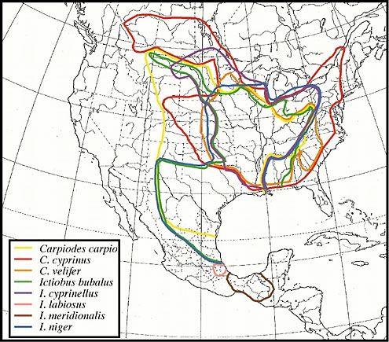

Figure: Distributions of currently recognized ictiobine species.
Ictiobines represent an interesting test case for examining speciation patterns across large rivers of eastern North America and Mexico. Most of the extant ictiobine species are wide ranging and show high degrees of sympatry, especially in the Mississippi River Basin. A consequence of the high overlap in distributions may be that the species complexes show similar (replicate) patterns of speciation, tied to the same vicariant events. Elucidation of these patterns can tell us much about drainage evolution in eastern North America.